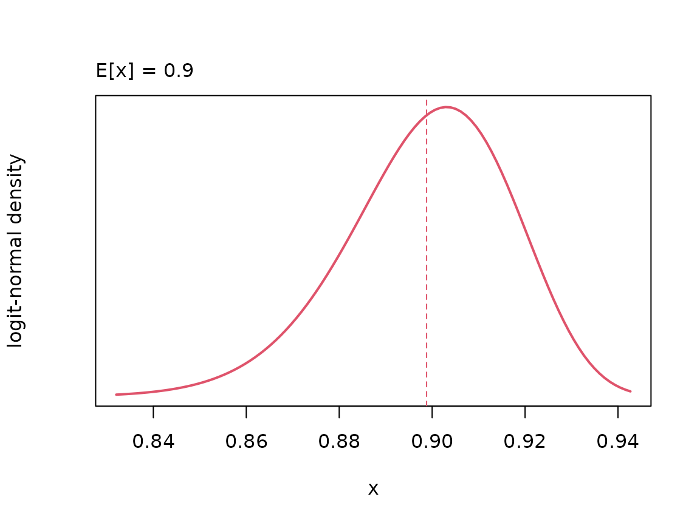
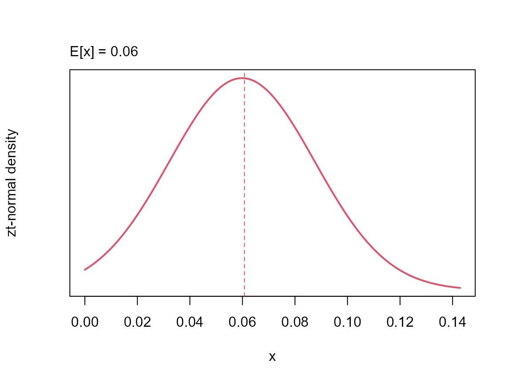
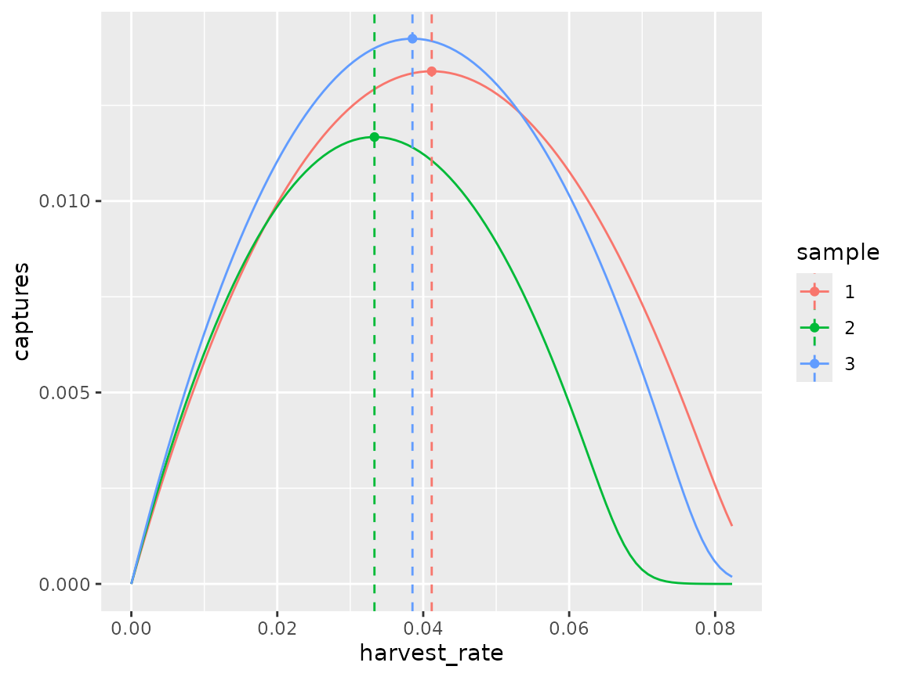
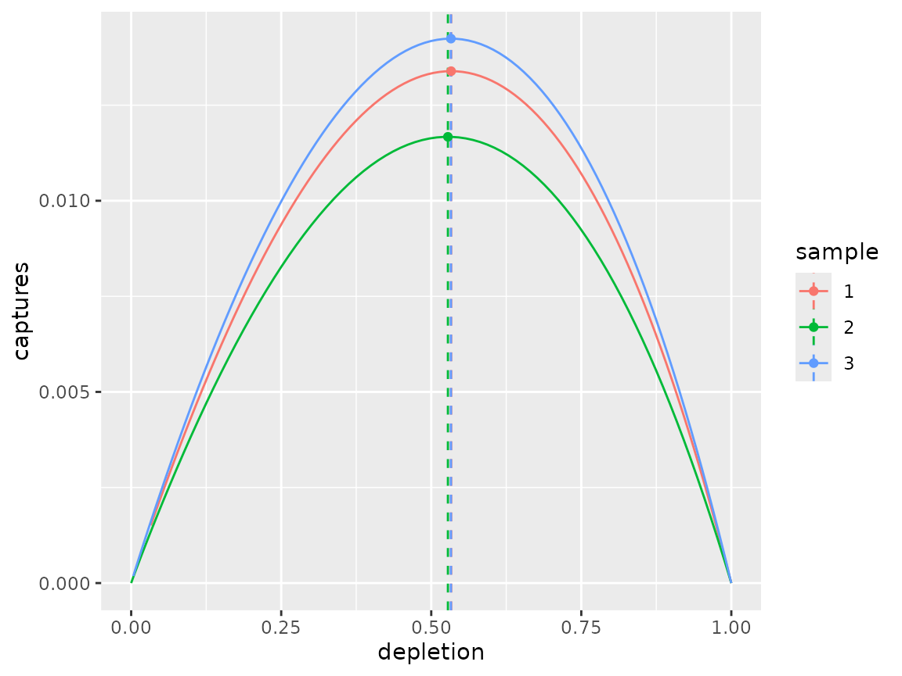
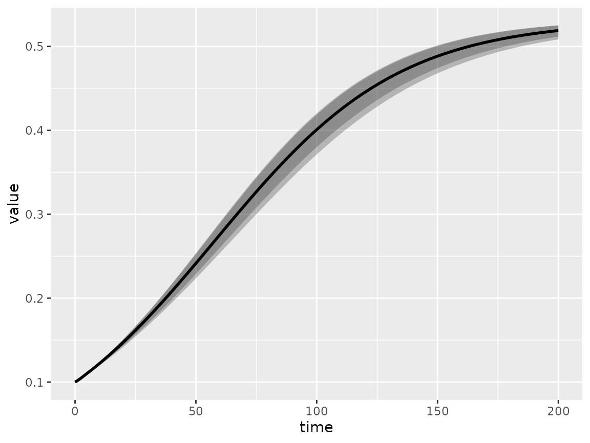
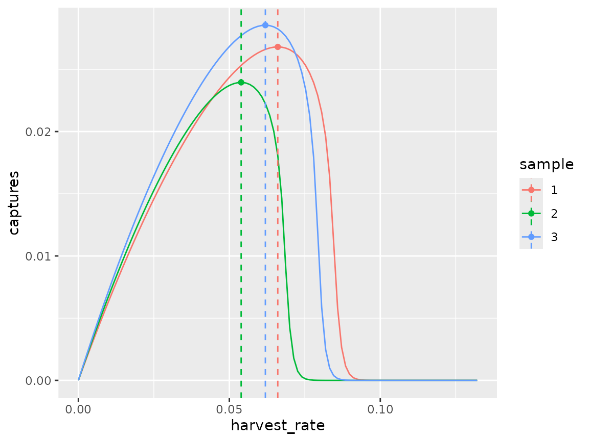
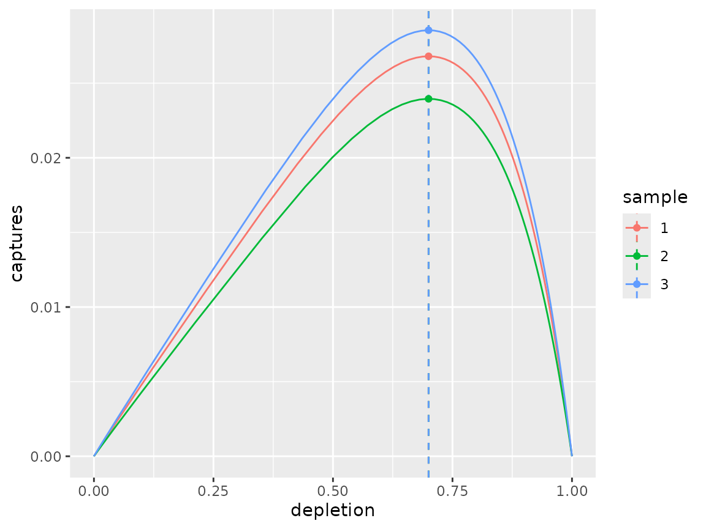
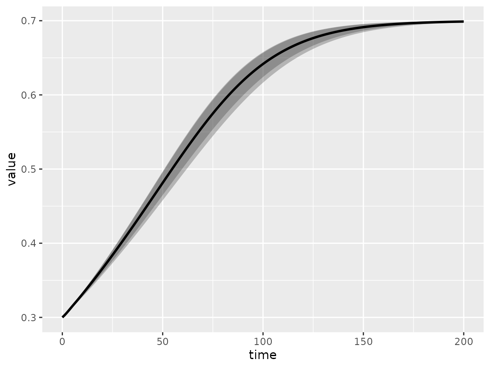

Operating model demonstration
Charles T T Edwards
20-Sep-2026
Source:vignettes/om_demo.Rmd
om_demo.Rmd
library(om)
#> Loading required package: RTMB
#> om version 0.3.3 (20-Sep-2026)
#>
#> Attaching package: 'om'
#> The following object is masked from 'package:base':
#>
#> sampleSetup
Setup operating model class object, assuming 3 samples from the input life-history distribution and a default projection period of 200 years.
om_object <- om(ages = 0:12, samples = 3L, time = 201)Set-up list of parameter distributions required for population dynamics function:
om_object <- om_object %>%
load_pars(list(s = distribution(pars = c(2.2, 0.2), density = "logitnormal", name = "adult survivorship"),
b = distribution(pars = c(0, 0.2), density = "lognormal", name = "female fecundity"), m = distribution(value = 4,
name = "age at maturity"), l = distribution(value = 0.7, name = "immature survivorship multiplier")))Each parameter is stored as a distribution class object
and assigned to the om_object@pars slot. A simple plotting
function can be used to quickly visualise the parameter input
distributions. For example:
plot(om_object@pars$s)
The intrinsic growth rate is calculated automatically when parameters
are assigned and stored in om_object@pars$r. There exists a
lambda() function for extracting the intrinsic growth on
either the natural or logarithmic scale. For example:
The intrinsic growth can be assumed to be the maximum, or an
alternative can be supplied. The default behaviour assigns
om_object@pars$r to om_object@pars$rmax but
truncates the distribution at zero:

To estimate the reference points, we are also required to load the observation and selectivity paramter distributions:
om_object <- om_object %>%
update_pars(list(o = distribution(value = 1, name = "age at observation"), v = distribution(value = 4,
name = "age at selectivity")))By default the 1+ carrying capacity is set to one:
om_object@pars$KFor the projections, uncertainty is required:
Fixed shape
Given the input parameter distributions, the shape parameter determines the depeletion at MNPL. This can be illustrated using a fixed shape value.
# assume shape
shape(om_object) <- 1
# deterministic ref. points
om_object0 <- rp(om_object, stochastic = FALSE, time = 200L)
targets(om_object0)
#> $captures
#> # A tibble: 3 × 2
#> sample value
#> <int> <dbl>
#> 1 1 0.0134
#> 2 2 0.0117
#> 3 3 0.0142
#>
#> $harvest_rate
#> # A tibble: 3 × 2
#> sample value
#> <int> <dbl>
#> 1 1 0.0412
#> 2 2 0.0333
#> 3 3 0.0385
#>
#> $depletion
#> # A tibble: 3 × 2
#> sample value
#> <int> <dbl>
#> 1 1 0.533
#> 2 2 0.528
#> 3 3 0.533The spf() function can be useful for plotting the
surplus production functions being assumed by the model:
dfr0 <- spf(om_object0, harvest_rate = seq(0, max(targets(om_object0)$harvest_rate$value) * 2, length = 101))
dfr1 <- data.frame(sample = as.character(1:om_object@samples), harvest_rate = om_object0@targets$harvest_rate,
captures = om_object0@targets$captures, depletion = om_object0@targets$depletion)
ggplot() + geom_line(data = dfr0, aes(x = harvest_rate, y = captures, col = sample)) + geom_vline(data = dfr1,
aes(xintercept = harvest_rate, col = sample), linetype = "dashed") + geom_point(data = dfr1,
aes(x = harvest_rate, y = captures, col = sample))
ggplot() + geom_line(data = dfr0, aes(x = depletion, y = captures, col = sample)) + geom_vline(data = dfr1,
aes(xintercept = depletion, col = sample), linetype = "dashed") + geom_point(data = dfr1, aes(x = depletion,
y = captures, col = sample))
When performing a stochastic projection, uncertainty is a consequence of the life-history parameter distributions only. By default, projections take place assuming a harvest rate equal the harvest rate at MNPL:
om_object0@harvest_rate
#> function (object, numbers, selectivity, pst, i)
#> {
#> ifelse(all(is.na(object@targets$harvest_rate)), 0, object@targets$harvest_rate[i])
#> }
#> <environment: 0x563327595b00>
# population dynamics
om_object0 <- pdyn(om_object0, stochastic = FALSE, initial_depletion = 0.1)
dynplot(om_object0)
Diagnostics are available per sample:
diagnostics(om_object0)
#> $captures
#> # A tibble: 600 × 4
#> sample iteration time value
#> <chr> <int> <int> <dbl>
#> 1 1 1 0 0.00234
#> 2 2 1 0 0.00208
#> 3 3 1 0 0.00248
#> 4 1 1 1 0.00241
#> 5 2 1 1 0.00213
#> 6 3 1 1 0.00256
#> 7 1 1 2 0.00247
#> 8 2 1 2 0.00218
#> 9 3 1 2 0.00263
#> 10 1 1 3 0.00252
#> # ℹ 590 more rows
#>
#> $depletion
#> # A tibble: 603 × 4
#> sample iteration time value
#> <chr> <int> <int> <dbl>
#> 1 1 1 0 0.1000
#> 2 2 1 0 0.1000
#> 3 3 1 0 0.1000
#> 4 1 1 1 0.102
#> 5 2 1 1 0.102
#> 6 3 1 1 0.102
#> 7 1 1 2 0.104
#> 8 2 1 2 0.103
#> 9 3 1 2 0.104
#> 10 1 1 3 0.106
#> # ℹ 593 more rows
#>
#> $harvest_rate
#> # A tibble: 600 × 4
#> sample iteration time value
#> <chr> <int> <int> <dbl>
#> 1 1 1 0 0.0412
#> 2 2 1 0 0.0333
#> 3 3 1 0 0.0385
#> 4 1 1 1 0.0412
#> 5 2 1 1 0.0333
#> 6 3 1 1 0.0385
#> 7 1 1 2 0.0412
#> 8 2 1 2 0.0333
#> 9 3 1 2 0.0385
#> 10 1 1 3 0.0412
#> # ℹ 590 more rowsEstimated shape
The shape can be estimated per life-history sample using the
shape function, in which case the desired target depletion
must be specified:
# estimate shape for assumed d_mnpl assumption
om_object1 <- shape(om_object, depletion = 0.7, stochastic = FALSE, time = 200L)
shape(om_object1)
#> [1] 4.109308 4.255719 4.117766As before reference points can be estimated and the surplus production function(s) plotted:
# deterministic ref. points
om_object1 <- rp(om_object1)
targets(om_object1)
#> $captures
#> # A tibble: 3 × 2
#> sample value
#> <int> <dbl>
#> 1 1 0.0268
#> 2 2 0.0240
#> 3 3 0.0285
#>
#> $harvest_rate
#> # A tibble: 3 × 2
#> sample value
#> <int> <dbl>
#> 1 1 0.0660
#> 2 2 0.0539
#> 3 3 0.0619
#>
#> $depletion
#> # A tibble: 3 × 2
#> sample value
#> <int> <dbl>
#> 1 1 0.700
#> 2 2 0.700
#> 3 3 0.700
dfr0 <- spf(om_object1, harvest_rate = seq(0, max(targets(om_object1)$harvest_rate$value) * 2, length = 101))
dfr1 <- data.frame(sample = as.character(1:om_object@samples), harvest_rate = om_object1@targets$harvest_rate,
captures = om_object1@targets$captures, depletion = om_object1@targets$depletion)
ggplot() + geom_line(data = dfr0, aes(x = harvest_rate, y = captures, col = sample)) + geom_vline(data = dfr1,
aes(xintercept = harvest_rate, col = sample), linetype = "dashed") + geom_point(data = dfr1,
aes(x = harvest_rate, y = captures, col = sample))
ggplot() + geom_line(data = dfr0, aes(x = depletion, y = captures, col = sample)) + geom_vline(data = dfr1,
aes(xintercept = depletion, col = sample), linetype = "dashed") + geom_point(data = dfr1, aes(x = depletion,
y = captures, col = sample))
Projection confirms that the population will converge on the depletion at MNPL specified during estimate of the shape:
om_object1 <- pdyn(om_object1, stochastic = FALSE, initial_depletion = 0.3, use_rmax = TRUE)
dynplot(om_object1)
diagnostics(om_object1)
#> $captures
#> # A tibble: 600 × 4
#> sample iteration time value
#> <chr> <int> <int> <dbl>
#> 1 1 1 0 0.0111
#> 2 2 1 0 0.00997
#> 3 3 1 0 0.0118
#> 4 1 1 1 0.0113
#> 5 2 1 1 0.0101
#> 6 3 1 1 0.0120
#> 7 1 1 2 0.0114
#> 8 2 1 2 0.0102
#> 9 3 1 2 0.0121
#> 10 1 1 3 0.0115
#> # ℹ 590 more rows
#>
#> $depletion
#> # A tibble: 603 × 4
#> sample iteration time value
#> <chr> <int> <int> <dbl>
#> 1 1 1 0 0.300
#> 2 2 1 0 0.300
#> 3 3 1 0 0.300
#> 4 1 1 1 0.303
#> 5 2 1 1 0.302
#> 6 3 1 1 0.303
#> 7 1 1 2 0.306
#> 8 2 1 2 0.305
#> 9 3 1 2 0.306
#> 10 1 1 3 0.309
#> # ℹ 593 more rows
#>
#> $harvest_rate
#> # A tibble: 600 × 4
#> sample iteration time value
#> <chr> <int> <int> <dbl>
#> 1 1 1 0 0.0660
#> 2 2 1 0 0.0539
#> 3 3 1 0 0.0619
#> 4 1 1 1 0.0660
#> 5 2 1 1 0.0539
#> 6 3 1 1 0.0619
#> 7 1 1 2 0.0660
#> 8 2 1 2 0.0539
#> 9 3 1 2 0.0619
#> 10 1 1 3 0.0660
#> # ℹ 590 more rows